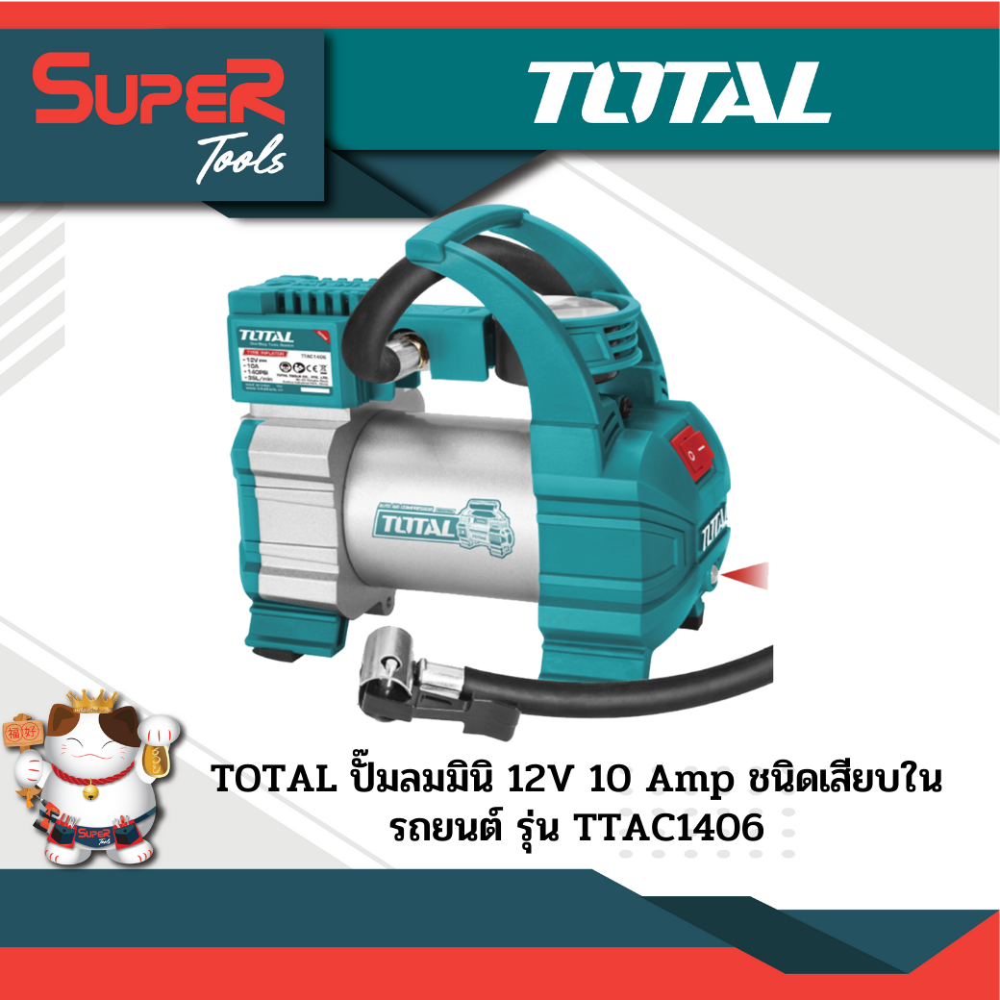

TOP KING
Home
About Us
Search
Login

TOTAL ปั๊มลมมินิ 12V 10 Amp ชนิดเสียบในรถยนต์ รุ่น TTAC1406
ราคา 900.00 บาท
Quantity: 1
TOTAL ปั๊มลมมินิ 12V 10 Amp ชนิดเสียบในรถยนต์ รุ่น TTAC1406 ◆ ระบบจ่ายไฟ 12 โวลล์ 10 แอมป์/แรงดัน 140 PSI (10 Bar) ◆ ปริมาณ 35 ลิตร / นาที
รายละเอียดสินค้า
ระบบจ่ายไฟ 12 โวลล์ 10 แอมป์/แรงดัน 140 PSI (10 Bar)
ปริมาณ 35 ลิตร / นาที
สายไฟพร้อมหัวต่อช่องจุดบุหรี่ยาว 3 เมตร พร้อมคีมแบตเตอรี่ ขนาดเล็ก
ท่อเป่าฝุ่นพร้อมสายต่อยาว 1.5 เมตุร
ใช้งานง่ายเพียงเสียบเข้ากับจุดบุหรี่ หรือหนีบขั้วแบตเตอรี่
ใช้เติมลม เป่าฝุ่น ได้ง่ายและสะดวก หัวเติมลม 4 แบบ
ข้อต่อทองเหลือง ถอด-ปลดหัวเติมลม / สายยาว 3 เมตร
ใช้งานต่อเนื่องได้ 800 นาที
เหมาะสำ หรับพกพาติดรถยนต์ มีขนาดเล็ก กะทัดรัด มีไฟ LED
น้ำหนัก 1.75 Kg.
Ref:
https://shorturl.at/vPQ01